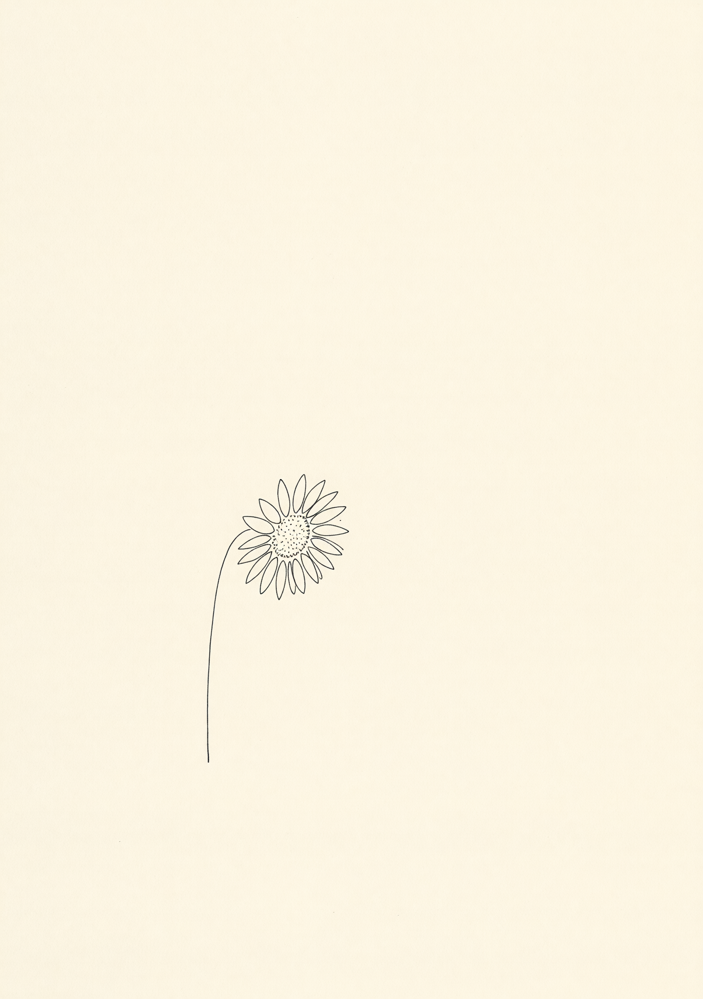

"A profile is the closest thing to a self-portrait most of us will ever make. We treat them more carefully."
a kindness,
plainly.
A reading of your dating profile.
You are tired. We can see that. Don't Die Alone is a sixty-second reading of your dating profile — every photo, your bio, your prompts — graded against published platform research and returned to you as a short list of fixes, kindly written.
No leaderboard. No tier list. No comparison to other men. Just the math, and what it suggests.
0.6% is the average male match rate on Tinder. The female rate, for comparison, is 10.5%¹.
63% of US men under thirty are single — almost double the rate of women that age².
74% of men report feeling emotionally exhausted by dating apps³.

It is a measurable health crisis. The U.S. Surgeon General has compared social isolation, in mortality terms, to smoking up to fifteen cigarettes a day — a 29% increase in the risk of premature death.
25% of young US men report feeling lonely "a lot of the day." That is the largest gap between young men and the rest of the developed world.
Five times as many men today report having no close friends at all than in 1990 — a number that has gone from 3% to 15% over a single generation.
And 38% of dating-app users developed symptoms consistent with clinical depression over the course of one twelve-week study.
The problem isn't you. The problem is that nobody has ever shown you the math on what's actually working in your photos and what isn't.
"A profile is the closest thing to a self-portrait most of us will ever make. We treat them more carefully."
We figure out which is which.
Tinder, Hinge, Bumble — twelve supported. Or pick up to four at once.
Photofeeler-style dimensions for photos. Red-flag detection for bios. A bucketing pass for prompts.
Ranked by estimated match-rate lift. Each one cited. Plus, optionally, a bio rewrite — Coach voice if you want warmth, Roast if you want teeth.
Hinge prompt likes are 47% more likely to lead to a date than photo likes. Hinge published data, 2024.
Forward-facing male headshots get 102% more likes than the average dating-app photo. Hinge Profile Picture Report.
Bumble's verified-profile badge increases match rate by approximately 70%. Bumble platform data.
Bathroom selfies are 90% less likely to be liked. Hinge Profile Picture Report.
Don't Die Alone was built by Zack Ballantine under the Banana Bytes umbrella. He is single, lives near Palm Springs, hands out three thousand sunflowers a year as random acts of kindness, pays for everything with two-dollar bills, and wears a banana suit for the entire month of September every year for suicide awareness.
He built this because the existing dating-coach industry runs on $99 monthly subscriptions and bullshit, and his friends kept sending him their profiles asking what was wrong.
This app exists because the founder ran out of patience.
~60 seconds of upload. The honesty your group chat is too polite to give you. Free during beta. Five free runs per visitor.